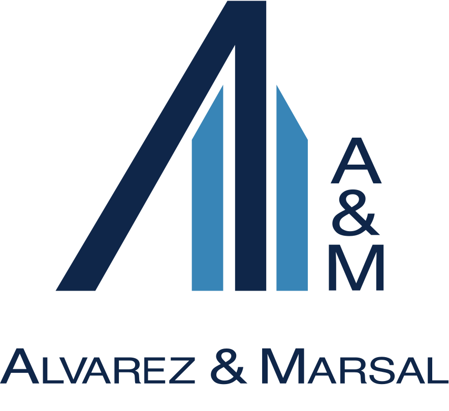

Alvarez & Marsal
Global Cyber Risk Services
— Present
Manager
- Led 80+ cyber incident response and forensic investigations, directing analysts, performing hands-on analysis, communicating findings, authoring final forensic reports, and managing the engagement lifecycle.
- Replaced manual forensic artifact extraction and analysis with automated pipelines, shortening time to findings and reducing engagement costs.
- Built multi-agent workflows to analyze forensic data, generate incident timelines, and queue flagged findings for analyst review.
- Rearchitected the U.S. on-premises forensic lab into a hybrid Azure and Proxmox environment with custom forensic images, individual analyst VMs, and shared ZFS storage.
- Designed and built an interactive tabletop exercise platform with a client portal, facilitator-controlled evidence releases, and branching scenarios for executive and technical incident response exercises.
- Assessed acquisition targets’ cybersecurity risks and remediation costs to inform buyer decisions and post-acquisition security priorities.
- Modeled cybersecurity cost adjustments for carve-out transactions and advised divested businesses on security controls from signing through post-close operations.
—